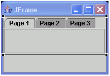
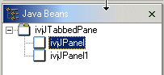
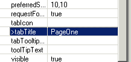

The class javax.swing.JTabbedPane allows
you to create a notebook with different pages. When you drop a component onto
a JTabbedPane this becomes a new page and is
shown as a child on the Design view and also the Java Beans view. The Design
view shows you the notebook folder and you can drop new pages at the end of
the list of existing tabs. One of the pages is the active page that you can
select in the Design view and work with. To change the active page you must
select it in the Java Beans view.

In the Design view, you can switch tab pages using the Switch To context
menu. If you mouse-button two with the JTabbedPane selected, the Switch
To submenu allows you to select a tab to bring to the top. New components
can also be dropped on the JTabbedPane in the
Java Beans view. If you select a page in the Java Beans view, the Design view
will switch and make it the active tab so you can work with the child component.

When a component is added to the JTabbedPane,it is done with the method insertTab(String title, Icon icon, Component childJavaBean, String tip, int index). To change the tab's title, its icon, or its tool tip, select the component and change in the Properties view. You can reorder the tabs by using the Java Beans Viewer. Select the tab, drag it to the location of your choice, then drop it.
